Question 1: Can we predict the global score of the student using their Quantitative Reasoning and Critical Reading?
Question 2: Can we predict the global score of the student using their Quantitative Reasoning and Critical Reading with School Nature as dummy variable?
The summary statistics of the variables of interest are shown below:
> var_of_interest <- c('gender','revenue','school_nat','cr_pro','qr_pro','g_sc')
> summary(s_perform[var_of_interest])
gender revenue school_nat cr_pro qr_pro g_sc
Length:12406 Length:12406 Length:12406 Min. : 1.0 Min. : 1.00 Min. : 37.0
Class :character Class :character Class :character 1st Qu.: 42.0 1st Qu.: 65.00 1st Qu.:147.0
Mode :character Mode :character Mode :character Median : 67.0 Median : 85.00 Median :163.0
Mean : 62.2 Mean : 77.42 Mean :162.7
3rd Qu.: 86.0 3rd Qu.: 96.00 3rd Qu.:179.0
Max. :100.0 Max. :100.00 Max. :247.0
school_type analysis
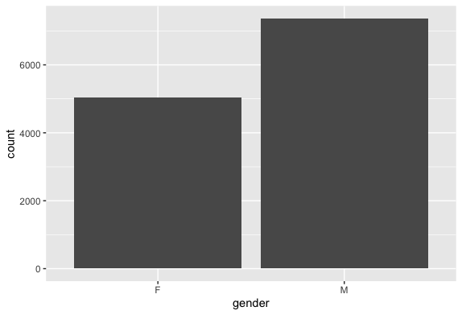School Nature analysis
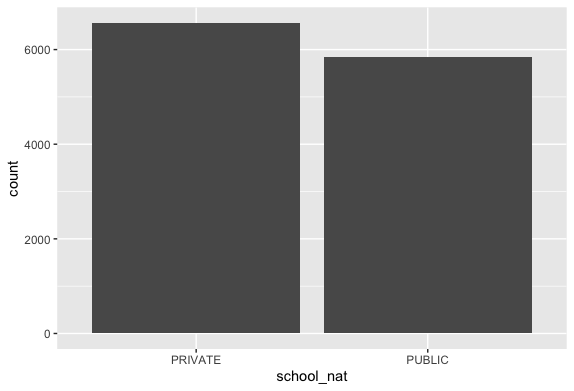Gender wise analysis
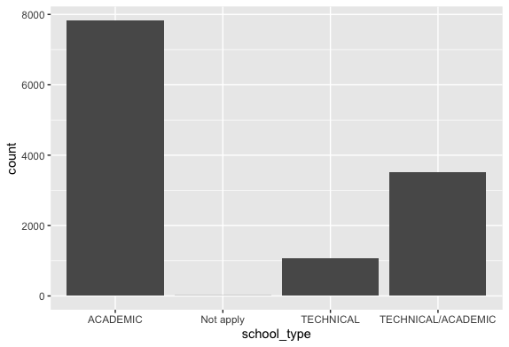Revenue wise analysis
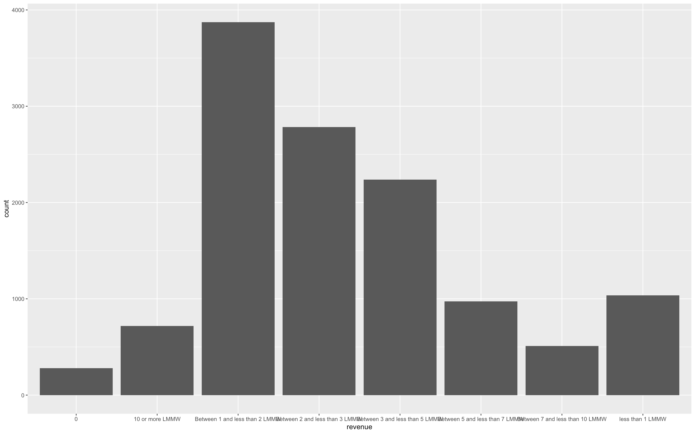
Inspection:
> pastecs::stat.desc(s_perform$g_sc, basic=F)
median mean SE.mean CI.mean.0.95 var std.dev coef.var
163.0000000 162.7153797 0.2074881 0.4067090 534.0948009 23.1104911 0.1420302
> g_scskew<-semTools::skew(s_perform$g_sc)
> g_sckurt<-semTools::kurtosis(s_perform$g_sc)
> g_scskew[1]/g_scskew[2]
skew (g1)
-4.322486
> g_sckurt[1]/g_sckurt[2]
Excess Kur (g2)
-1.715517
> g_sc<- abs(scale(s_perform$g_sc))
> FSA::perc(as.numeric(g_sc), 1.96, "gt")
[1] 4.05449
> FSA::perc(as.numeric(g_sc), 3.29, "gt")
[1] 0.1531517
g_sc was assessed for normality. Visual inspection of the histogram and QQ-Plot identified some issues with skewness and kurtosis. The standardised score for kurtosis (-1.72) can be considered acceptable using the criteria proposed by West, Finch and Curran (1996), but the standardised score for skewness (-4.32) was outside the acceptable range. However 100% of standardised scores for g_sc fall within the bounds of +/- 3.29, using the guidance of Field, Miles and Field (2013) the data can be considered to approximate a normal distribution.
> na_count
cod_s11 gender edu_father edu_mother occ_father occ_mother stratum sisben people_house ...10 internet tv
1 0 0 0 0 0 0 0 0 0 100 0 0
computer washing_mch mic_oven car dvd fresh phone mobile revenue job school_name school_nat school_type
1 0 0 0 0 0 0 0 0 0 0 0 0 0
mat_s11 cr_s11 cc_s11 bio_s11 eng_s11 cod_spro university academic_program qr_pro cr_pro cc_pro eng_pro
1 0 0 0 0 0 0 0 0 0 0 0 0
wc_pro fep_pro g_sc percentile X2nd_decile quartile sel sel_ihe
1 0 0 0 0 0 0 0 0
s_perform <- filter(s_perform, s_perform$school_type !='Not apply')
s_perform
The predictors are chosen with the help of a correlation test, this is done to identify some kind of relationship between the predictor and the dependent variable. If there exists a moderate/high correlation then we can assume that variable to be a predictor.
Null Hypothesis: The population correlation coefficient between g_sc and qr_pro is equal to a hypothesized value (=0 indicating no linear correlation)
Alternate Hypothesis: The population correlation coefficient between g_sc and qr_pro is not equal (or less than, or greater than) the hypothesized value(indicating linear correlation)
> stats::cor.test(s_perform$g_sc, s_perform$qr_pro, method='pearson')
Pearson's product-moment correlation
data: s_perform$g_sc and s_perform$qr_pro
t = 109.1, df = 12404, p-value < 2.2e-16
alternative hypothesis: true correlation is not equal to 0
95 percent confidence interval:
0.6906862 0.7086488
sample estimates:
cor
0.6997781
We can observe from the graph that there is a moderate positive linear correlation, which implies we have satisfied our assumptions for pearson test they are:
From Pearson correlation,we get a correlation of 0.70, which means the effect size is medium(Acc. to cohen's effect size heuristic).
Assuming our alpha level = 0.05, our p-value(0.001) < 0.05 => The correlation is statistically significant.
And so we have evidence to reject null hypothesis in favour of the alternate which is there is a relationship between g_sc and qr_pro. So, we can use qr_pro as one of the predictors
The relationship between g_sc(global score achieved by students) and qr_pro(Quantitative reasoning achieved in University) was investigated using a Pearson correlation. A positive correlation was found(r=0.70,n=12404,p< 0.001).
Null Hypothesis: The population correlation coefficient between g_sc and cr_pro is equal to a hypothesized value (=0 indicating no linear correlation)
Alternate Hypothesis: The population correlation coefficient between g_sc and cr_pro is not equal (or less than, or greater than) the hypothesized value(indicating linear correlation)
> stats::cor.test(s_perform$g_sc, s_perform$cr_pro, method='pearson')
Pearson's product-moment correlation
data: s_perform$g_sc and s_perform$cr_pro
t = 141.79, df = 12404, p-value < 2.2e-16
alternative hypothesis: true correlation is not equal to 0
95 percent confidence interval:
0.7796011 0.7930323
sample estimates:
cor
0.7864097
We can observe from the graph that there is a high positive linear correlation, which implies we have satisfied our assumptions for pearson test they are:
From Pearson correlation,we get a correlation of 0.79, which means the effect size is large(Acc. to cohen's effect size heuristic).
Assuming our alpha level = 0.05, our p-value(0.001) < 0.05 => The correlation is statistically significant.
And so we have evidence to reject null hypothesis in favour of the alternate which is there is a relationship between g_sc and cr_pro. So, we can use cr_pro as one of the predictors
The relationship between g_sc(global score achieved by students) and cr_pro(Critical Reading achieved in University) was investigated using a Pearson correlation. A strong positive correlation was found(r=0.79,n=12404,p< 0.001).
The t test tells you how significant the differences between groups are; In other words it lets you know if those differences (measured in means) could have happened by chance.
Hypothesis (Two-tailed):
Null Hypothesis H0: There is no difference in mean g_sc score between those who went to a private and public school.
Alternate Hypothesis HA: There is a difference in mean g_sc score between those who went to a private and public school.
> psych::describeBy(s_perform$g_sc, s_perform$school_nat, mat=TRUE)
item group1 vars n mean sd median trimmed mad min max range skew kurtosis
X11 1 PRIVATE 1 6560 168.2293 22.81689 170 168.7494 23.7216 37 247 210 -0.20320838 0.02354186
X12 2 PUBLIC 1 5846 156.5281 21.83817 157 156.5667 22.2390 72 228 156 -0.05215938 -0.01912125
se
X11 0.2817115
X12 0.2856189
> car::leveneTest(g_sc ~ school_nat, data=s_perform)
Levene's Test for Homogeneity of Variance (center = median)
Df F value Pr(>F)
group 1 12.514 0.0004054 ***
12404
---
Signif. codes: 0 ‘***’ 0.001 ‘**’ 0.01 ‘*’ 0.05 ‘.’ 0.1 ‘ ’ 1
> stats::t.test(g_sc ~ school_nat,var.equal=FALSE,data=s_perform)
Welch Two Sample t-test
data: g_sc by school_nat
t = 29.168, df = 12341, p-value < 2.2e-16
alternative hypothesis: true difference in means is not equal to 0
95 percent confidence interval:
10.91485 12.48758
sample estimates:
mean in group PRIVATE mean in group PUBLIC
168.2293 156.5281
Since homogeneity failed we are setting var.equal to FALSE as there is no equal means
> res <- stats::t.test(g_sc ~ school_nat,var.equal=FALSE,data=s_perform)
> effcd=round((2*res$statistic)/sqrt(res$parameter),2)
> effectsize::t_to_d(t = res$statistic, res$parameter)
d | 95% CI
-------------------
0.53 | [0.49, 0.56]
> effes=round((res$statistic*res$statistic)/((res$statistic*res$statistic)+(res$parameter)),3)
> effes
t
0.064
"An independent-samples t-test was conducted to compare the mean scores of g_sc for students who studied in Public and Private schools. A significant difference in the scores for g_sc was found ( M=168.23, SD= 22.8 for students studied in Private schools, M= 156.53,SD= 21.83 for students who studied in Public Schools),(t(12404)= 29.17, p = 0.01). A medium effect size was also indicated by Cohen's d value (0.53)."
Research Question : Can we predict the global score of the student using their Quantitative Reasoning and Critical Reading? Null Hypothesis: The values of g_sc cannot be predicted with the predictor variables(cr_pro, qr_pro) using Multiple linear Regression. Alternate Hypothesis: : The values of g_sc can be predicted with the predictor variables(cr_pro, qr_pro) using Multiple linear Regression.
> model1<-lm(s_perform$g_sc~s_perform$qr_pro+s_perform$cr_pro)
> stargazer(model1, type="text")
=================================================
Dependent variable:
-----------------------------
g_sc
-------------------------------------------------
qr_pro 0.380***
(0.006)
cr_pro 0.480***
(0.005)
Constant 103.484***
(0.398)
-------------------------------------------------
Observations 12,406
R2 0.712
Adjusted R2 0.712
Residual Std. Error 12.401 (df = 12403)
F Statistic 15,341.490*** (df = 2; 12403)
=================================================
> lm.beta(model1)
Call:
lm(formula = s_perform$g_sc ~ s_perform$qr_pro + s_perform$cr_pro)
Standardized Coefficients::
(Intercept) s_perform$qr_pro s_perform$cr_pro
0.0000000 0.3725515 0.5740398
> vifmodel
s_perform$qr_pro s_perform$cr_pro
1.481366 1.481366
> #Tolerance
> 1/vifmodel
s_perform$qr_pro s_perform$cr_pro
0.6750525 0.6750525
Leverage
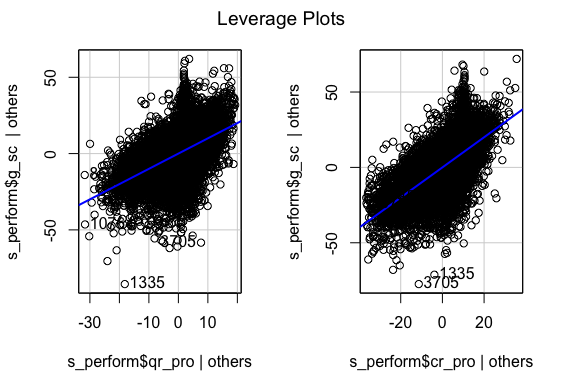Ressidual Fit
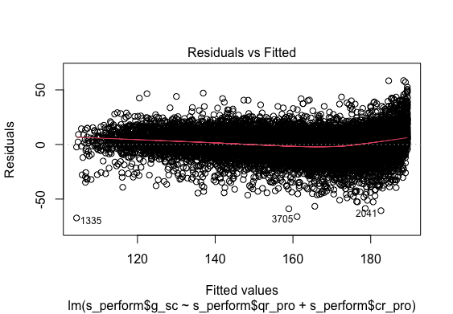Standard Residual Fit
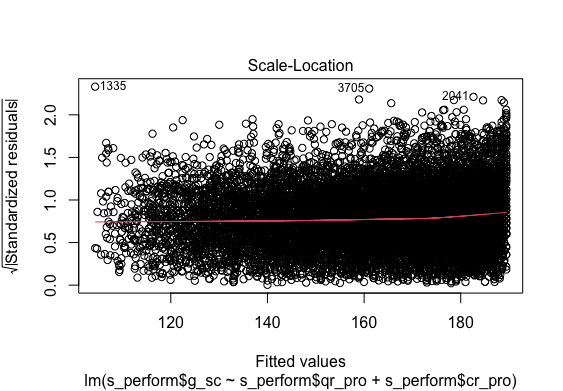QQ Error distribution
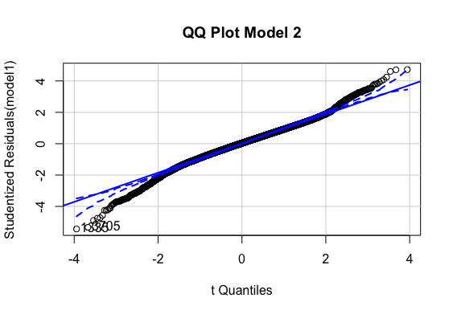Histogram error distribution
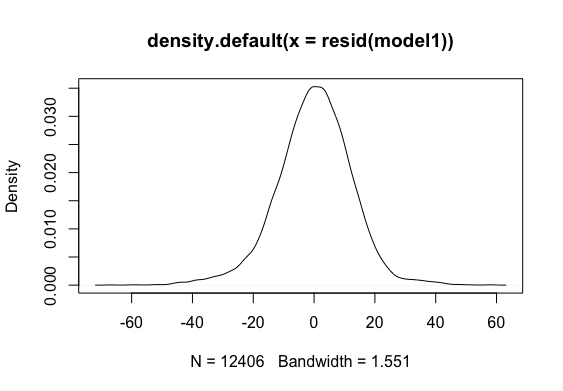
Multiple regression analysis was conducted to determine the global scores(g_sc). Scores of Quantitative Reasoning and Critical Reading were used as predictor variables. Examination of the histogram, normal P-P plot of standardised residuals and the scatterplot of the dependent variable, and standardised residuals showed that some outliers existed. However, examination of the standardised residuals showed that some could be considered to have undue influence (95% within limits of -1.96 to plus 1.96 and none with Cook’s distance >1 as outlined in Field (2013). Examination for multicollinearity showed that the tolerance and variance influence factor measures were within acceptable levels (tolerance >0.4, VIF < 2.5 ) as outlined in Tarling (2008). The scatterplot of standardised residuals showed that the data met the assumptions of homogeneity of variance and linearity. The data also meets the assumption of non-zero variances of the predictors.
Research Question : Can we predict the global score of the student using their Quantitative Reasoning and Critical Reading with School Nature as dummy variable?
Differential effect
Null Hypothesis The values of g_sc cannot be predicted with the predictor variables(cr_pro, qr_pro, school_nat) using Multiple linear Regression.
Alternate Hypothesis: : The values of g_sc can be predicted with the predictor variables(cr_pro, qr_pro, school_nat) using Multiple linear Regression.
> model2<-lm(s_perform$g_sc~s_perform$qr_pro+s_perform$cr_pro+s_perform$school_nat)
> stargazer(model2, type="text") #Tidy output of all the required stats
=================================================
Dependent variable:
-----------------------------
g_sc
-------------------------------------------------
qr_pro 0.368***
(0.006)
cr_pro 0.471***
(0.005)
school_natPUBLIC -5.134***
(0.222)
Constant 107.329***
(0.424)
-------------------------------------------------
Observations 12,406
R2 0.724
Adjusted R2 0.724
Residual Std. Error 12.141 (df = 12402)
F Statistic 10,847.740*** (df = 3; 12402)
=================================================
Note: *p< 0.1; **p< 0.05; ***p< 0.01
> lm.beta(model2)
Call:
lm(formula = s_perform$g_sc ~ s_perform$qr_pro + s_perform$cr_pro +
s_perform$school_nat)
Standardized Coefficients::
(Intercept) s_perform$qr_pro s_perform$cr_pro s_perform$school_natPUBLIC
0.0000000 0.3614803 0.5634178 -0.1109039
Public = 0+0.361+0.563-0.11=0.814
Private=0+0.361+0.563 =0.924
Leverage
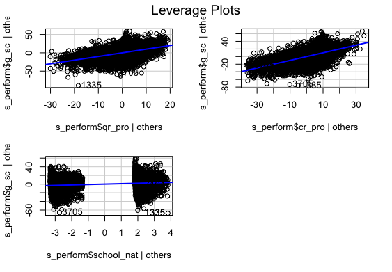Ressidual Fit
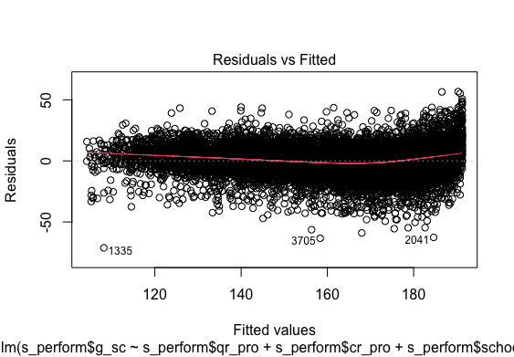Standard Residual Fit
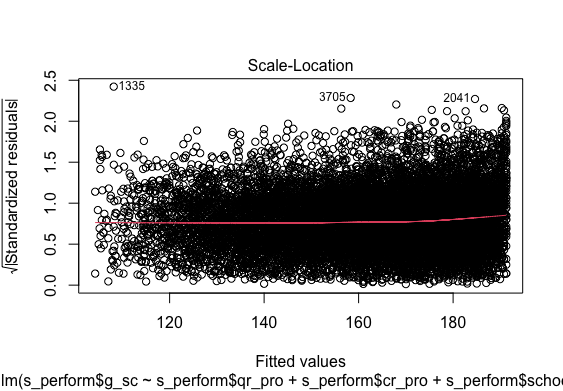QQ Error distribution
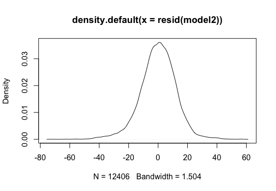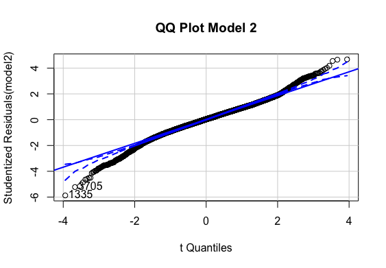
Histogram error distribution
Multiple regression analysis was conducted to determine the global scores(g_sc). Scores of Quantitative Reasoning and Critical Reading were used as predictor variables. In order to include the School Nature in the regression model it was recorded dummy variable school_nat (0 for Private, 1 for Public).Examination of the histogram, normal P-P plot of standardised . Examination of the histogram, normal P-P plot of standardised residuals and the scatterplot of the dependent variable, and standardised residuals showed that some outliers existed. However, examination of the standardised residuals showed that some could be considered to have undue influence (95% within limits of -1.96 to plus 1.96 and none with Cook’s distance >1 as outlined in Field (2013). Examination for multicollinearity showed that the tolerance and variance influence factor measures were within acceptable levels (tolerance >0.4, VIF < 2.5 ) as outlined in Tarling (2008). The scatterplot of standardised residuals showed that the data met the assumptions of homogeneity of variance and linearity. The data also meets the assumption of non-zero variances of the predictors.
> stargazer(model1, model2, type="text")
===============================================================================
Dependent variable:
-----------------------------------------------------------
g_sc
(1) (2)
-------------------------------------------------------------------------------
qr_pro 0.380*** 0.368***
(0.006) (0.006)
cr_pro 0.480*** 0.471***
(0.005) (0.005)
school_natPUBLIC -5.134***
(0.222)
Constant 103.484*** 107.329***
(0.398) (0.424)
-------------------------------------------------------------------------------
Observations 12,406 12,406
R2 0.712 0.724
Adjusted R2 0.712 0.724
Residual Std. Error 12.401 (df = 12403) 12.141 (df = 12402)
F Statistic 15,341.490*** (df = 2; 12403) 10,847.740*** (df = 3; 12402)
===============================================================================
Note: *p< 0.1; **p < 0.05; ***p < 0.01